南宮大社/岐阜県
美濃国一の宮である南宮大社は鉱山や金属の神様として多くの信仰を集めている。
関が原の戦でで焼失したが、その後、徳川家光によって再建されたという。
その再建当時の本殿や拝殿など多くの建物が今でも残されている由緒正しき神社なのだ。
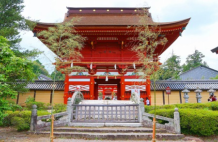
門前には神様しか渡ることのできないという石の太鼓橋がある。これもまた徳川家光の寄進によるもの。
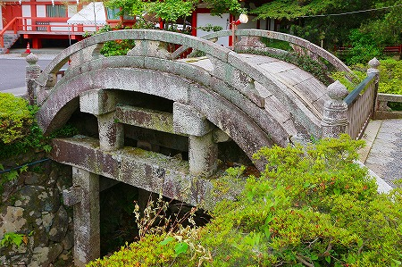
境内は朱で塗られた拝殿と高舞殿が華やかな雰囲気を醸しだしている。
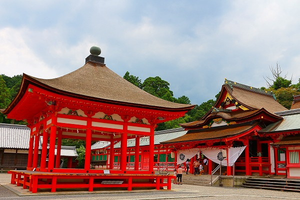
この日は丁度大祓式の日で、茅の輪くぐりをやっていた。
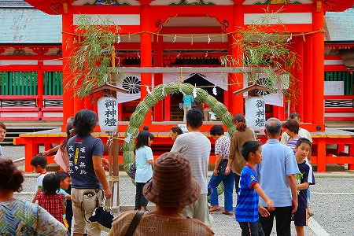
由緒正しき神社なので大勢の人が訪れて神妙に茅の輪を潜ってました。
この神社、建物の様式や配置などが独特だが、まあ、それはここで論ずるコトではないのでいいです。
問題なのはこの神社に奉納されてるアレコレなのだ。
この南宮大社、金山彦命を祭る神社、つまり金属の神様なので様々な金物絵馬が奉納されている。
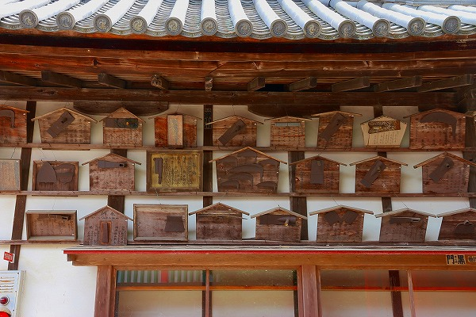
様々な金属部分が絵馬に貼り付けられて奉納されている。
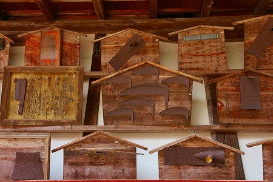
鋤、鍬、鎌、鉈、鋸、鋏、
それぞれの奉納者が職業に応じた道具を奉納している。
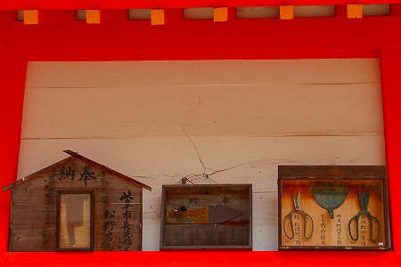
鑿がズラリと並んだ絵馬。
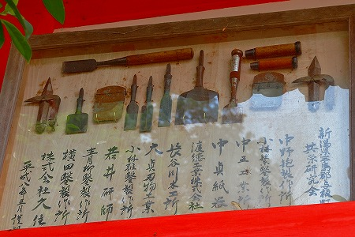
精密機器メーカーは鎌を奉納していた。
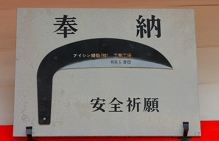
自社製品を奉納したり。
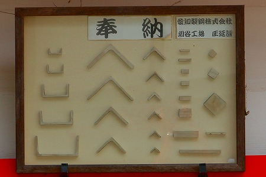
他にも歯車の奉納しているメーカーなどもあった。
金属の存在は日本の信仰風土の中でも特殊な位相を占めている。
それまでの農耕社会を根底から覆す金属文化の出現は一方で、新しい信仰を生み出したと言えよう。
例えば稲荷信仰のような農耕的風土からは生まれ得ない、より物質的でより即物的な信仰というのかな。
各々の目的に特化した信仰が生まれたような気がするんだな。物凄く漠然とした感覚なんだけど。
また関が原の戦で災いを被ったことを逆手にとって天下分目難関突破祈願、というのも受け付けている。
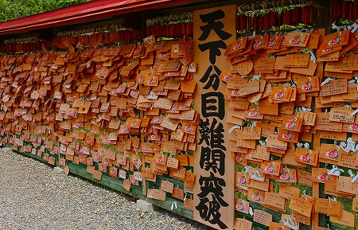
こちらも勿論難関大学合格祈願に特化しまくってました。
そんな南宮大社境内の片隅、ほとんど人も訪れないような場所に不思議な塔？が。
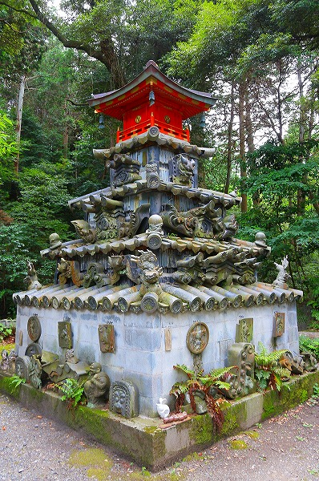
これは瓦塚といい、古い社殿に使われていた鬼瓦などを集めてあるのだそうな。
以下碑文
長年社殿を守ってきた古瓦は無下に仕末することは許されない
心から厚くその功業に謝し今より常世神の引常明神の大前に捧げまつり常にその功力の御蔭を祈りまつる
…とのことです。ちなみに建立は平成3年。
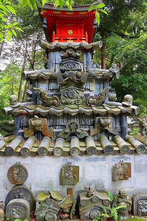
いずれ劣らぬ迫力の瓦がみっしりと結集している。
鬼瓦や隅瓦は単なる装飾だけでなく魔除けや災難除けといった呪術的な意味合いを帯びている。
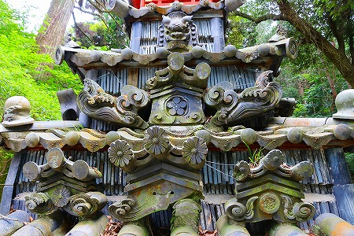
社殿の建て替えなどで引退した鬼瓦なれど、かつては各々の社殿で魔除けの最前線にいた瓦な訳で、いずれも劣らぬ迫力に満ちていた。
いわば鬼瓦オールスターズなのだ。
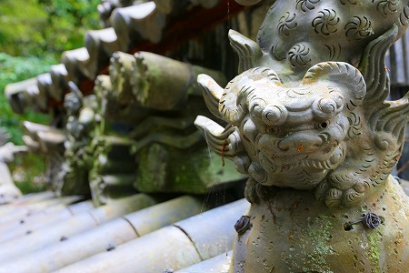
如何であろう、まるで退役軍人がズラリと居並ぶような妙な迫力に満ちたこの姿。
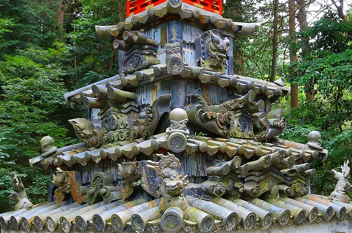
こうした塚が他にあるのかどうか知らないが、いずれにせよかなり珍しいものだと思う。
この塚は単に瓦を集めただけではない。
様々な形状の瓦が集まりひとつの塚として再構築されたことで見たこともない不思議な造型物となっているのだ。
まるで過去の名フレーズをリミックスして新しい音楽を生み出すように。
それぞれの社殿の記憶や歴史、そういったものを集積することで新しい何かを生み出そうとしているように思えてならない。
そういう意味では極めてポストモダン的な塚だ、といえよう。
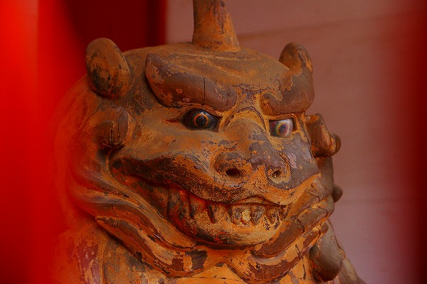
現役の魔除けである狛犬さんも一寸ビビリ気味でしたよ…。
2013.06.
珍寺大道場 HOME